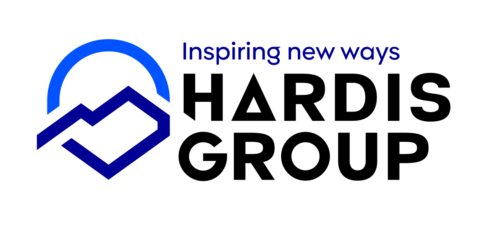

Projet universitaire - site Hardis Group
Description
Création d'un site web institutionnel pour l'entreprise Hardis Group, à destination de la génération alpha. Offres de stage pour les collégiens disponibles, avec une présentation vulgarisée des informations fournies par l'entreprise.
(projet réalisé en premier semestre de BUT Informatique)
Objectifs
- Concevoir une maquette de site web
- Réaliser un site web en adéquation avec la maquette
- Représenter les valeurs et l'image de Hardis Group à travers ce site
- Assurer une accessibilité du contenu au plus grand nombre de visiteurs (à destination d'un public non technique)
Compétences Utilisées
Travail en Équipe
Ce projet a été réalisé en équipe de 3 étudiants. Nous avons travaillé ensemble sur la maquette, la conception et sur le contenu du site. Nous avons réparti les tâches de développement en fonction des compétences de chacun et avons apprit l'utilisation de Git pour collaborer efficacement sur le projet.
Travail Individuel
J'ai personnellement travaillé sur la réalisation de la page Transition écologique et responsable de l'entreprise, ainsi que sur son contenu. J'ai également réaliser la page d'accueil.
Techniques et Savoirs-Faire Acquis
- Adapter un contenu technique à un public non spécialiste
- Utiliser Git et gérer les conflits de merge
- Travailler en équipe sur un projet informatique
- Concevoir une interface claire et intuitive
- Transformer une maquette en un site fonctionnel
- Amélioration des compétences en HTML5 et CSS3